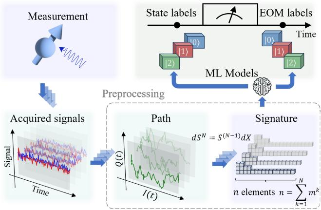
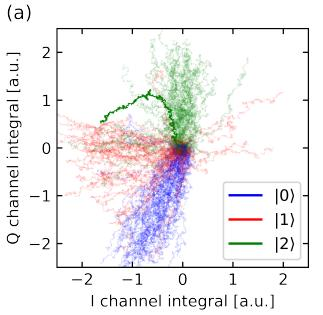

物理图像：从”画线判决”到”反推修正”
在能量选择读出（Elzerman 读出）中，源漏费米面被调到自旋向上、向下两个能级之间：只有激发态 电子能隧穿出量子点，随后一个 电子回填，电荷传感器（SET 或 QPC）电流因此出现一个特征性的”高电平脉冲”（blip）。传统的单发读出判决方式是选取一个时间窗口 和一个电压阈值 ：窗口内信号最大值超过 判为激发态，否则判为基态。
这种”画线”方式有两个结构性弱点：
- 最佳点极窄：读取可见度 是 的二维函数，其最大值只落在相图上一个很小的区域；阈值偏离最佳值毫伏量级，判决误差就明显增大。
- 硬件天花板：想把 继续推高，只能改造测量线路或更换样品（例如压低电子温度、提高传感器信噪比），这些手段各自有物理上限，且要中断在跑的实验。
阈值无关读出（threshold-independent readout）的出发点是：与其费力寻找并守住那个唯一的最佳 ，不如把”阈值选错”本身建模为读取可见度的下降，再利用读取可见度与测量概率之间的线性关联把偏差的概率反推回来。这样，几乎任意 下采集的数据都能被修正到接近真值，判决对阈值的绝对位置不再敏感。
理论模型
读出阶段的速率方程
读出阶段量子点有三个相关状态：电子处于 、处于 、点已排空（概率分别为 ）。设激发态、基态电子跳出量子点的速率为 、，基态电子从源漏回填的速率为 ，自旋弛豫速率为 。概率矢量 满足速率方程 ，转移矩阵
不含时，因此解可直接写成矩阵指数 ，初态取 ，其中 是读出开始时电子处于激发态的概率——这是整个读出想测的物理量。点排空的概率（即传感器出现高电平的概率）有解析式：
其中 。第一项与 无关，是基态电子来回隧穿构成的本底；含 的第二项正是平均信号上”鼓包”的来源。把多次轨迹平均归一化后用此式拟合，即可提取三个隧穿速率（一般 ，拟合时可忽略 ）。
三种可见度及其因子化
对阈值判决的每个环节可以分别定义保真度 （某自旋态被正确判定的概率），并合成可见度 。论文中区分了三层：
- 自旋–电荷转换可见度 ：只考虑时间窗口 ——窗口内激发态电子是否跳出过、基态电子是否误跳出。因为只关心”是否跳出过”，可以去掉回填通道，用修改后的转移矩阵求出解析解：
求极值点得最佳时间窗口
物理上这是一场赛跑：窗口太短激发态来不及跳出，太长基态也开始跳出，最优值由两个隧穿速率之比的对数决定。
- 电荷探测可见度 ：选定 后，只考虑阈值 对信号最大值分布的划分。设两态信号在窗口内最大值的概率密度为 、，则 （积分限分别为阈值的一侧）。由于最大值分布没有解析式， 只能靠 Monte-Carlo 模拟数值获得。
- 读取可见度 ：对 两个参数的整体表征。把两阶段判决的正确/错误路径全部展开，可严格证明因子化关系
由于 与 的最优点并不重合（ 随窗口增大而下降）， 的最佳窗口与 略有偏移。这一关系也提供了便捷算法：，不必单独模拟。
阈值无关的核心：线性关联与反推
设读出开始时激发态概率为 。经过自旋–电荷转换，窗口内探测到隧穿事件的概率为
再经过阈值比较，最终测得的”激发态”概率为
其中 是暗计数（dark count）本底。这就是阈值无关读出的基石：测量概率 对读取可见度 严格线性，斜率恰是待测量 ，而 本身与读出参数无关。于是一旦用 Monte-Carlo 模拟算出工作点 处的 和 ，就可以直接反推出去除读出误差后的期望概率
传统方法只在 的最大点采信数据；阈值无关方法则允许在几乎整个参数平面上取值再修正——判据从”信号是否越过某条线”变成”该工作点的可见度是多少”，阈值本身从答案中消去。论文以 的参数区域面积 量化方法的有效性，阈值无关方法将 扩大了约 60 倍。
参数提取与 Monte-Carlo 模拟
的相图需要知道每条轨迹最大值在两个态下的分布 ，这无法用解析式表达，只能靠 Monte-Carlo 生成模拟轨迹：按隧穿速率逐采样点做均匀随机抽样决定电子是否跳出/回填，生成归一化隧穿信号，再按高低电平均值 赋幅值、加入白噪声、并以数字滤波模拟测量链路的 8 阶贝塞尔低通（截止 10 kHz）。模拟所需的全部参数分三步从实验数据提取：
- 高斯混合模型（Gaussian mixture model, GMM）：把全部读出信号的概率密度分布分解为两个高斯峰，提取高低电平均值 ；
- 速率方程拟合：用上一节的 解析式拟合平均轨迹的鼓包，提取 ；
- 最大值分布拟合：生成带噪声与滤波的模拟轨迹，统计每条轨迹最大值 的分布并与实验分布比较，拟合噪声幅度 。
模拟与实验最大值分布的残差（拟合优度）在不同时间窗口下稳定在 0.98 附近，表明模型自洽。
参数与量级
以下数值取自硅量子点单自旋器件（四层重叠铝电极）在 下的实测与模拟：
| 量 | 数值 | 说明 |
|---|---|---|
| 激发态跳出速率 | ||
| 基态跳出速率（决定窗口上限） | ||
| 基态回填速率 | ||
| 采样率 | 采集卡 ATS-460 | |
| 自旋弛豫速率 | ||
| 电子温度 | ，略低于 13 的高可见度判据 | |
| 对应 | ||
| 最佳 处的读取可见度 | ||
| 提升 | 误差 的参数空间面积 | |
| 高温边界 | @ | 超过此温度 不再优于传统方法，此时 |
要使 超过 99%，需同时满足 、、；该实验中后两条满足，瓶颈是 ，即电子温度偏高。
实验特征与适用范围
误差来源。 反推公式的准确性直接依赖模拟所得 的准确性。数值计算中阈值需离散化成区间：用区间右边界计算时几乎所有参数都满足 ，而改用区间中点或左边界（阈值仅移动 ）合格区域就迅速缩小。误差根源是模拟与实验最大值分布之间的微小错位：其累积误差的形状与最大值分布相似，在双峰之间的低谷处归零——因此最佳工作区恰落在双峰间的低谷附近，而非 的最大点。错位误差的绝对值本身很小且特征不明显，难以在拟合中直接排除，这是方法的主要残余误差。
电子温度边界。 隧穿速率受费米–狄拉克占据因子调制：
其中 是源漏费米面到两点能级中点的距离。由实测比值 可反解
进而求出裸速率 ；假设它们与温度无关，即可外推任意 下的读出表现。结论是：阈值无关方法的 随温度升高而缩小，在 下约 处与传统方法持平——传统阈值法因 的要求在 以上就难以工作，而阈值无关方法把可用的温度上限提高了近一个量级。作为参照，Si-MOS 实验中 的电子温度已把自旋单发读出可见度压到约 0.7，成为自旋–电荷转换保真度的主要瓶颈。
适用边界。 该框架针对”两态差异表现为一个时间隧穿事件”的能量选择读出；它不能修复映射阶段本身的缺陷——自旋弛豫 和热激发已包含在速率方程中，会直接吃掉可见度。方法也不是”零超参数”：仍需标定隧穿速率、噪声、滤波响应，并选择离散化区间与合格误差标准。对于以静态电平差异为主的读出（如射频反射测量的双峰直方图），阈值判决本身已足够稳健；而在更高温区，基于泡利自旋阻塞的读出因可隔离电子库而更有优势。
路径签名（path signature）是轨迹结构判读的现代数学工具：把测量记录的时域轨迹变换为签名特征（迭代路径积分），用整条轨迹的形状信息（而非单一时刻值或简单统计量）做态判别——判给保真度在相同数据下显著增强。与 Monte-Carlo 建模的判读（词条主线）互补：路径签名不需要显式噪声模型，直接从数据学判别边界。

路径签名增强读出：时域测量轨迹 → 签名特征变换 → 态判别——整条轨迹的形状信息进入判决。图源：arXiv:2402.09532，Fig. 1。

判给保真度增强：路径签名方法与传统判别的对比——相同数据下保真度显著提升。图源：arXiv:2402.09532，Fig. 2。
与其他概念的关系
- 本方法是单发读出在判决环节的一种实现：映射（自旋–电荷转换）与获取环节不变，只替换判决与后处理。
- “利用时间轨迹结构判读”的思想与超导侧的JC 非线性”亮态”跳变读出同源：都依赖对信号轨迹的建模而非固定幅度阈值（见该词条”cQED 中的腔分岔单发读出”一节）。
- 隧穿事件的物理基础是库仑阻塞下电子数的逐个变化；读出点在电荷稳定图上的位置（源漏费米面夹在两自旋能级之间）决定了”只有激发态能跳出”的选择性。
- 电荷信号由邻近传感器拾取，如QPC 电荷传感或 SET；信号链的带宽与滤波（贝塞尔低通）进入 Monte-Carlo 模型，连接电荷噪声环境。
- 待测的 通常来自单自旋量子比特的 弛豫曲线或门操作末态；修正后的 直接改善这些实验的对比度。
- 更大规模的阈值/边界自动标定属于自动调控与电荷态识别问题；阈值无关思想（用模型修正代替死守最佳工作点）与之一脉相承。
- 超导侧的对应课题是读出诱导泄漏基准测试：当信号轨迹/直方图里混入根本不属于计算子空间的泄漏态时，任何基于 模型的判决都会失明，需要在判决之外用协议级方法单独量化泄漏率。